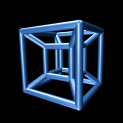

<textarea style="height=640;,width=460;,top=500;,left=500;">
<html>
<head>
<script type="text/javascript">
function okno_zamknij()
{
window.close()
}
</script>
</head>
<body>
<p style="font-size:0.5cm;"><b>Teoria:</b>
a)Uwagi na temat JS<br>
-Powstala w 1995 roku<br>
-JavaScript to obiektowy język skryptowy..<br>
-JS zawsze jest wykonywana po stronie przeglądarki. Node. js, o którym wspomniał 0ceanborn, <br>
to jest JavaScript wykonywany po stronie serwera.<br>
-js, podobnie jak inne języki i środowiska, jest bezpieczny, gdy projekty w nim budowane są <br>
traktowane z odpowiednią dbałością i zastosowaniem najlepszych praktyk.<br>
-Java to obiektowy język programowania, a JavaScript to obiektowy język skryptowy. Aplikacje w <br>
języku Java działają w maszynie wirtualnej lub w przeglądarce, a kod JavaScript jest uruchamiany <br>
wyłącznie w przeglądarkach. Kod języka Java wymaga skompilowania, a kod JavaScript pozostaje <br>
w formie tekstu.<br>


<input type="button" value="zamknij okno" onclick="okno_zamknij()"/>
</body>
</html>
</textarea>
<input type="button" value="zamknij okno" onclick="okno_zamknij()"/>